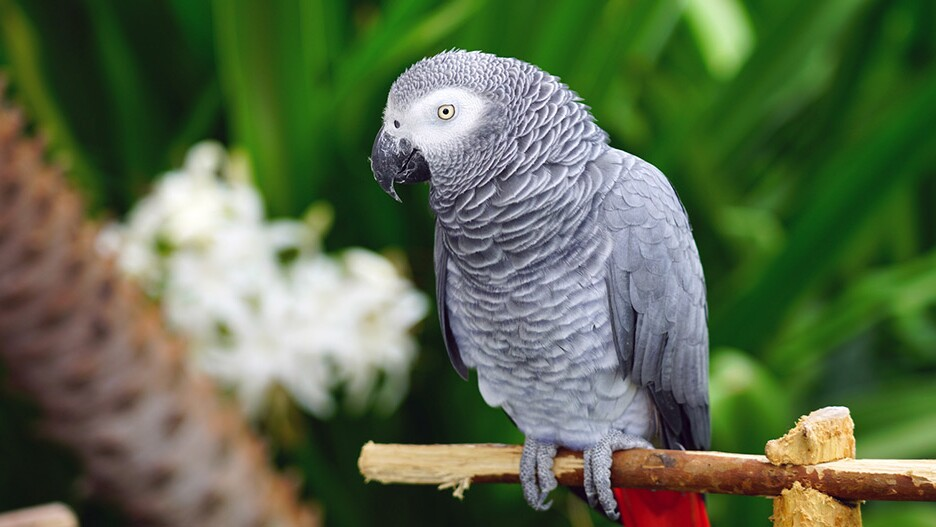
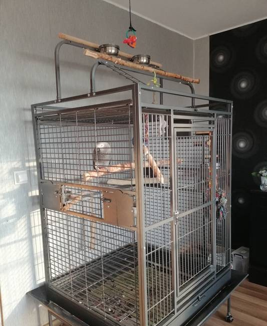
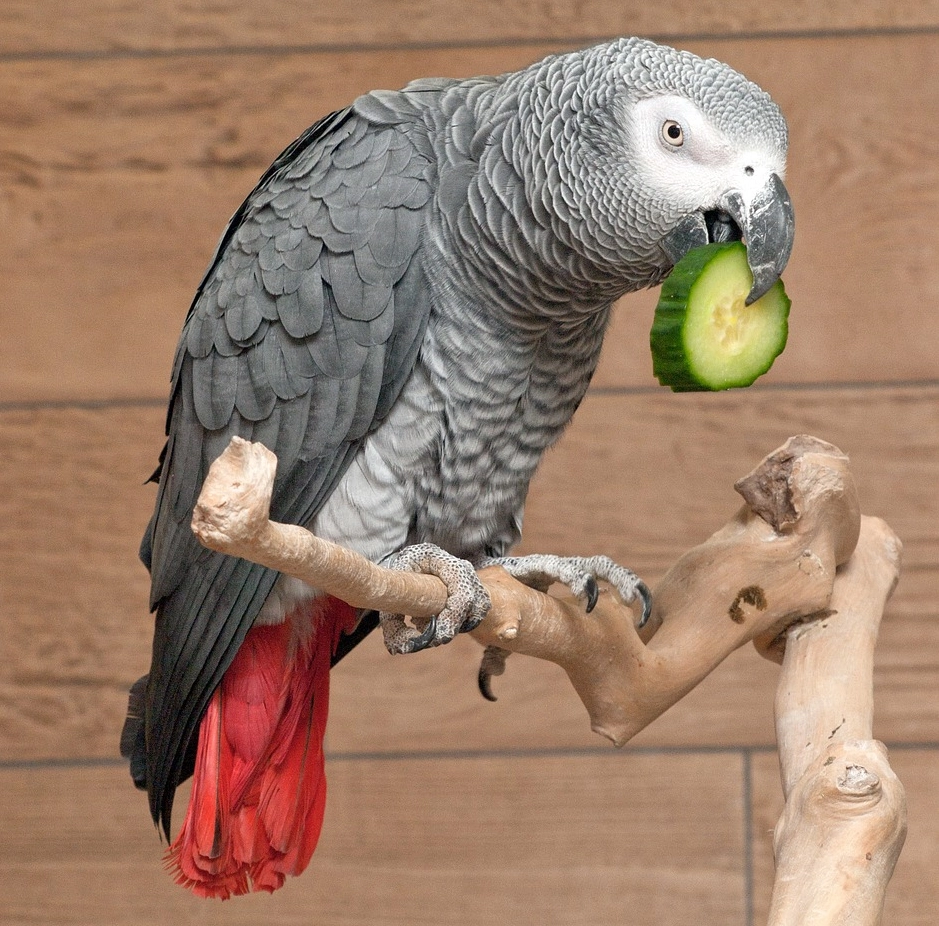

Pochodzenie
Afryka – lasy równikowe (Kongo, Ghana, Kamerun)
Długość
30–35 cm
Długość życia
40–60 lat (czasem więcej)
Tryb życia
Dzienny, bardzo społeczny
Cechy szczególne
Niezwykła inteligencja i zdolność naśladowania mowy
Najinteligentniejsza papuga – mistrz mowy i analizy

Afryka – lasy równikowe (Kongo, Ghana, Kamerun)
30–35 cm
40–60 lat (czasem więcej)
Dzienny, bardzo społeczny
Niezwykła inteligencja i zdolność naśladowania mowy
Żako ma szare upierzenie, czarny dziób i charakterystyczny czerwony ogon. Mimo niepozornego wyglądu jest jedną z najbardziej inteligentnych papug na świecie.

20–28°C
Bardzo wysoka – wymaga stymulacji umysłowej
Umiarkowany, ale potrafi być głośna
Silnie przywiązuje się do opiekuna

Żako jest uznawane za najinteligentniejszą papugę świata. Potrafi uczyć się setek słów, rozumie kontekst i rozwiązuje problemy logiczne. Wymaga codziennej stymulacji umysłowej, inaczej może popaść w stres lub depresję.
Wymaga bardzo dużej uwagi i relacji z człowiekiem